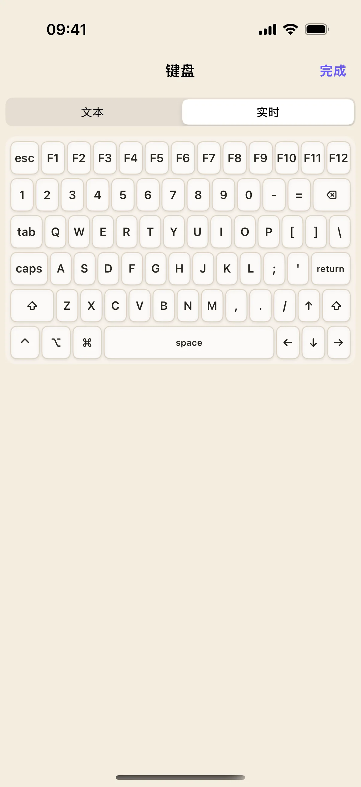
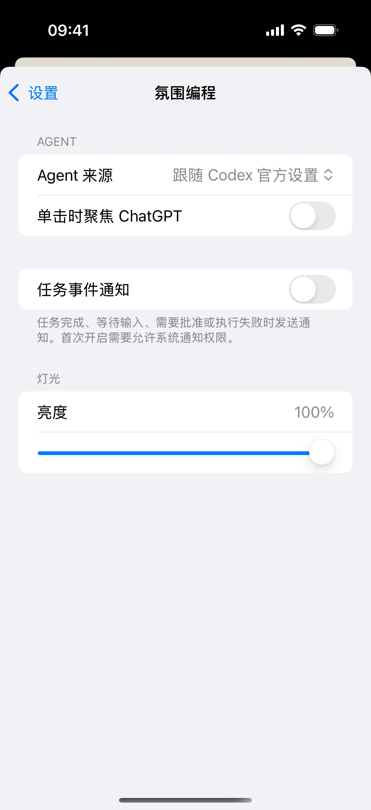

使用氛围编程布局时，第一件事是确认选中了哪项任务。这个练习先选择任务，再打开输入，最后查看任务设置，避免把指令发到另一个对话。
开始前准备
- iPhone / iPad 安装奶猫妙控 1.2.0，Mac 安装同版本配套端；完成配对，并允许 Mac 端的辅助功能权限。需要电脑画面时，再开启屏幕录制权限。
- Mac 上需要运行 Codex 桌面 App，并有可供选择的任务。这里讲的是桌面 App 的任务控制；终端中的命令行会话请使用终端布局。
1. 进入氛围编程，读出当前任务
在 App 底部点“布局”，在列表中找到“氛围编程”。布局较多时用搜索框搜索名称；有多个桌面的方案先点右侧箭头展开，再点桌面名称；搜索具体桌面名称也能找到它。
先看六个任务键上的名称与状态，再在 Mac Codex 中找到对应任务。截图使用“整理项目文档”等虚构名称；你的按钮取自实际任务来源，不需要创建同名任务。
任务键只显示有限的槽位，不表示账号只能有六项任务。没有任务名称时，先检查 Mac Codex 是否已运行和连接状态。

2. 先理解单击与双击，再切换任务
默认设置下，单击任务键在后台选择任务；双击会在切换的同时把对应 App 带到前台。先在 Mac 放一个其他窗口到前面，单击你要继续的任务，再双击同一任务，对照前台窗口的变化。
如果启用了“单击时聚焦 ChatGPT”，单击也会聚焦。操作前先检查自己的设置，不能仅凭“点了一次”推断是否会抢走当前窗口焦点。
3. 打开实时键盘，先核对输入位置
选好任务后点“实时键盘”，打开手机输入面板，再点“实时”，确认不是文本草稿模式。先在 Mac 检查当前任务标题和输入框，再输入一段准备好的草稿。
实时输入与发送任务是两个动作。输入后先检查 Mac 中的完整文本，确认无误再使用任务发送操作；不要用批准键替代普通发送。

4. 核对模型与推理强度
回到桌面，查看“模型”和“推理强度”旋钮下方的状态。需要调整时，每次只移动一个档位，等手机与 Mac 当前任务的设置同步后再继续。
可用模型和推理档位取决于实际 Codex 版本与账号。图中的 GPT-5.5 与“高”只是演示值，不应被当成所有账号固定可选的完整列表。额度面板展示可读取的使用窗口；不要把演示百分比当成你的账号余额。
5. 到设置里检查聚焦方式
点底栏“设置”，打开“氛围编程”。这里可以查看 Agent 来源、“单击时聚焦 ChatGPT”和任务事件通知等设置。
想保持后台切换时，检查单击聚焦开关；希望每次选择后直接回到对应任务，则可开启它。返回任务桌面，用第 2 步的方法验证自己的设置。

6. 遇到审批时，先阅读请求
当任务实际出现待审批请求时，先在 Mac 阅读请求内容与操作范围，再选择手机上的“批准”或“拒绝”。普通任务没有待审批请求时，不能靠这两颗键推进它。
需要另起一项工作时使用“新任务”；想保留当前对话背景另开分支时再使用“分叉任务”。完成后仍要核对 Mac 中的新任务，避免在旧任务上继续输入。
操作不符合预期时
任务名称没有更新？
先确认 Mac Codex 正在运行，当前任务来源里确实有任务；再检查连接与版本。不要用截图里的演示标题判断自己是否连接成功。
额度为空，是否代表没有剩余额度？
不代表。未读取到额度时不能按零余额理解。请查看 Codex 自身提供的用量信息，等状态读取恢复后再核对。
本文按奶猫妙控 1.2.0 的界面与操作编写，更新于 2026 年 9 月 10 日。查看更新日志 · 连接与权限帮助。